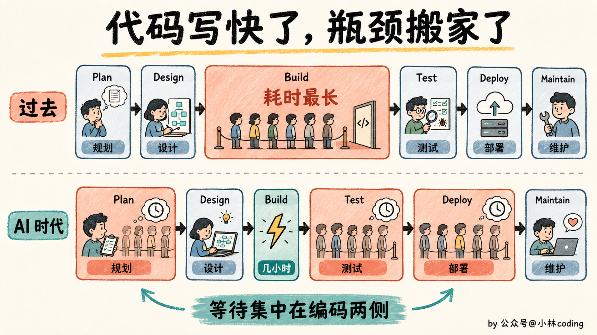
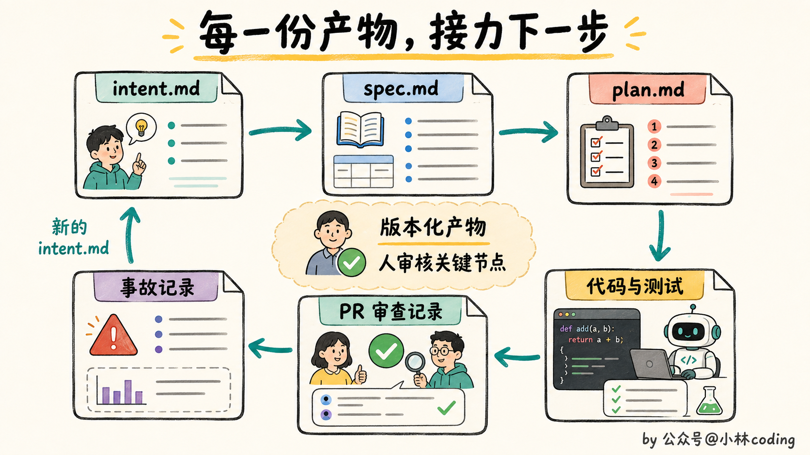
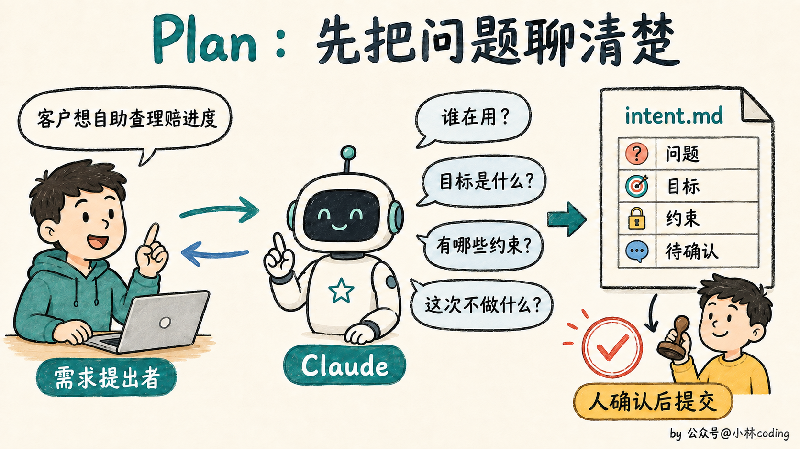
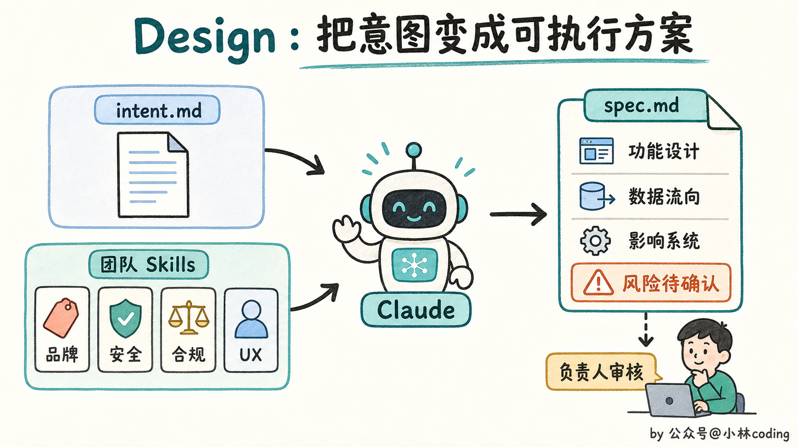
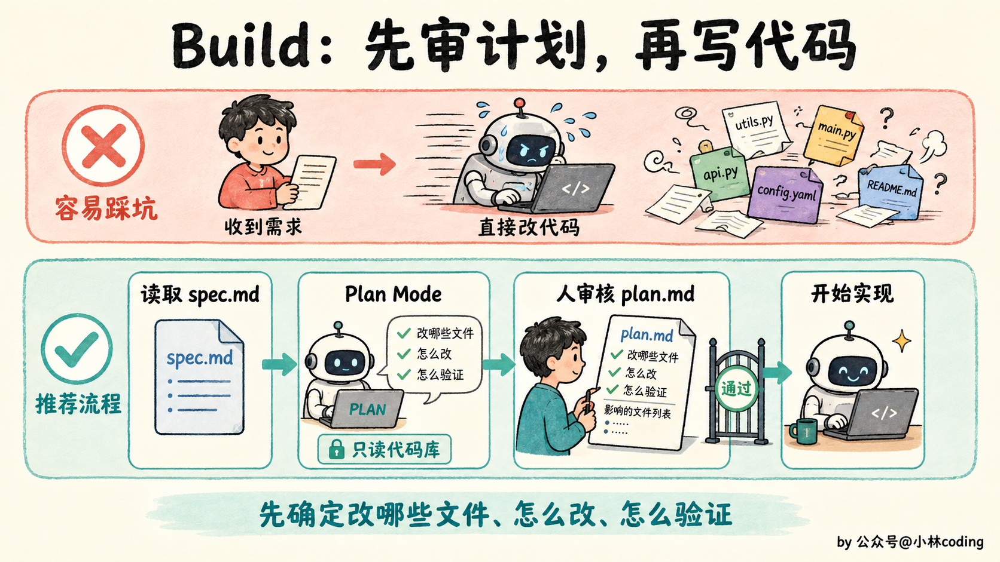
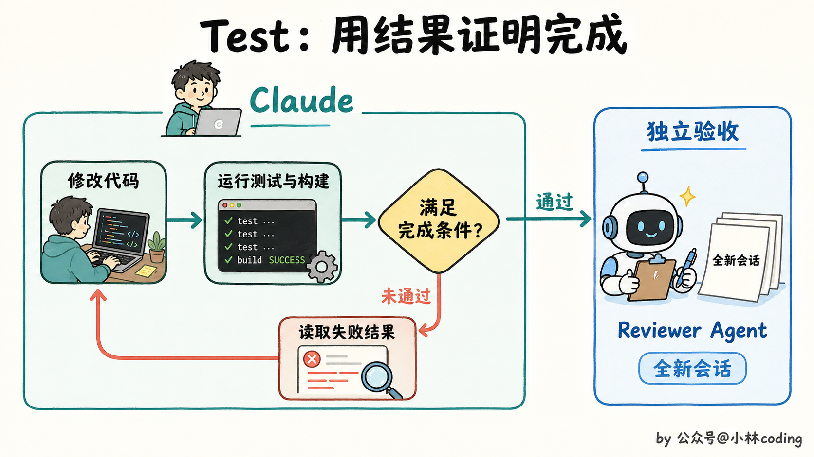
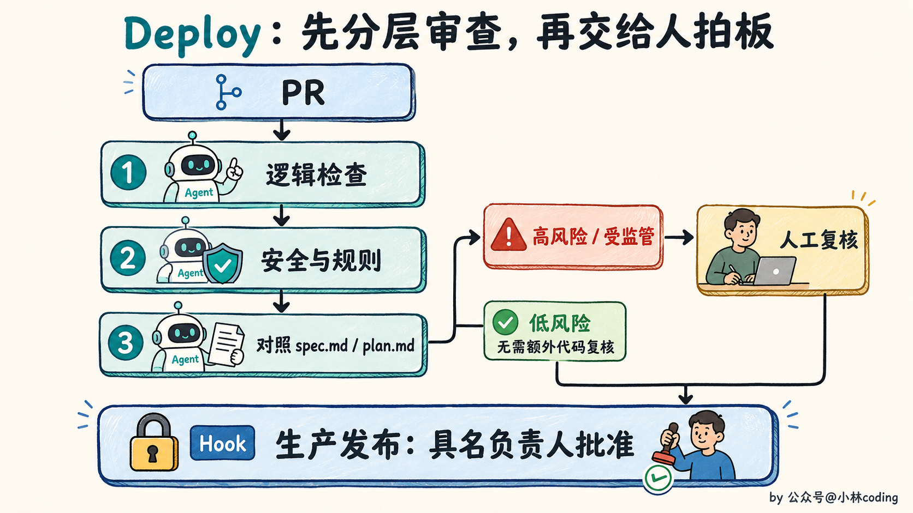
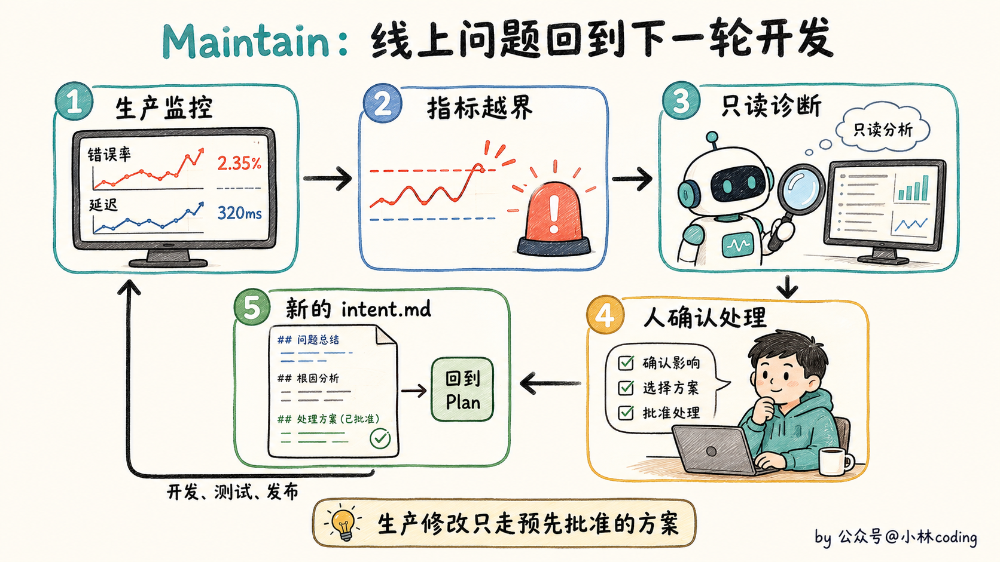
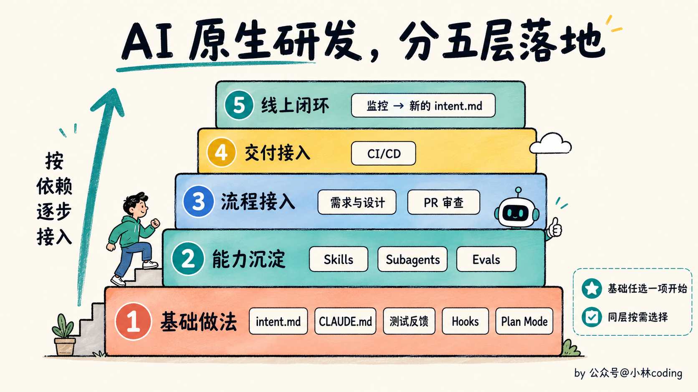

AI 原生研发流程图解：从需求到上线，Claude Code 怎么参与六个阶段？
大家好，我是小林。
最近，Anthropic 发布了一篇博客《The AI-Native SDLC Playbook》，翻译过来就是「AI 原生软件开发生命周期手册」。
这个手册专门讲 AI 进入软件开发以后，整个研发流程该怎么改。
目前 Anthropic 内部大约 80% 的合入代码，已经由 Claude 编写。过去需要几天完成的代码，可能几个小时就生成出来了。
但需求、评审、测试和发布，还在按照原来的速度运行。
AI 半天写完代码，接下来等一天需求确认、两天 Code Review、两天测试排期，最后再等发布窗口。代码生成速度上去了，产品交付并没有跟着快多少。
你看，AI 只是把中间的编码阶段压缩了，前后那一大串流程并没有消失。
Anthropic 认为，团队接下来得把规划、设计、构建、测试、部署和维护这六个阶段，都按照 AI 的能力重新设计，才能适应 AI 时代下的软件开发。
01｜代码写快以后，旧流程为什么卡住了？
那为什么代码一变快，原来的流程就开始卡住了？
因为传统的软件开发流程，一直围绕一个前提设计，写代码最耗时间，也最贵。
产品经理收集需求，架构师设计方案，工程师负责实现，再交给测试、发布和运维团队。每个角色负责一段，工作通过文档、工单和审批向下传递。
以前一个功能要开发几周甚至几个月，团队花几天开需求会、做安全评审和排发布窗口，也能接受。
现在 AI 把 Build 阶段压缩到几小时，原来的平衡一下就被打破了。
规划、审查和部署仍然按照人的速度运行，新的瓶颈就堵在了编码阶段的两边，过去的管控方式也开始跟不上代码产量。
人写代码的时候，Reviewer 还能逐行检查。Agent 一次生成几十个文件以后，安全团队和 Reviewer 的人数并没有增加，审查队列只会越积越长。

接下来会发生什么？要么代码一直排队等审查，要么团队为了赶进度，让没有充分检查的代码上线。对有安全和合规要求的公司来说，这两条路都走不通。
Anthropic 给出的方案，是让 AI 进入整个软件开发生命周期，并把人留在需要判断和授权的关键节点。
02｜AI Native 到底改了什么？
那 Anthropic 准备怎么改造这套软件开发流程？
传统的软件开发生命周期像一条单向流水线。产品把需求交给设计，设计再交给开发，开发完成后交给测试和发布。
Anthropic 把这条流水线改成了一个 Loop。
每个阶段结束时，团队都提交一份版本化的产物，下一阶段直接读取这份产物继续工作。
规划阶段产出 intent.md，设计阶段产出 spec.md，构建前产出 plan.md。后面还有代码和测试、带审查记录的 PR，以及线上事故记录。

这些文件既能给人看，也能让 AI 接着执行。一份通过审核的 intent.md 可以触发设计，一份获批的 spec.md 可以触发计划模式，合并后的 PR 可以触发 CI/CD。线上指标越界以后，维护阶段又会生成新的 intent.md。
刚开始时，团队还是手动提示 Claude 执行每一步。等流程跑顺以后，再让前一个阶段的产物自动触发下一个阶段。
Git 提交历史也会成为审计记录。谁提出了需求，Claude 生成了什么，谁批准了方案，都能从版本记录里查回来。
讲到这里，你大概能看出人的位置怎么变了。AI 负责把流程往下推进，人集中审核那些需要判断力的决定。
03｜六个阶段具体怎么跑？
Anthropic 把整套方法分成 Plan、Design、Build、Test、Deploy 和 Maintain 六个阶段。
1. Plan，怎么把一个想法变成 intent.md ？
过去一个人有了产品想法，通常先写工单，再找产品经理开会补用户故事和验收标准。现在他可以先用自己的话和 Claude 讨论，不用一上来就憋一份格式完整的需求文档。
Claude 会像分析师一样追问，问题影响谁、希望达到什么结果、有哪些限制、这次明确不做什么。提出者把自己知道的讲清楚，不确定的地方可以先留着。
讨论清楚以后，Claude 按照团队模板生成一份 intent.md。提出者负责纠正理解偏差，产品负责人确认后，再把文件提交到版本控制里。

官方给出的例子，是让保险客户在门户里查看理赔状态。intent.md 会写清当前问题、期望结果、受影响的系统、数据限制和待确认的问题。
看到这里你可能会觉得，这不就是让 AI 帮忙写 PRD 吗？
区别在于，最初提出问题的人把原始意图直接留在文件里，工程团队不用经过几轮转述，再去猜他一开始到底想解决什么。
2. Design，怎么把意图变成 spec.md ？
有了 intent.md，能不能马上写代码？还不行。
Claude 会读取前面的 intent.md，再加载团队已经整理好的品牌、安全、合规和用户体验 Skills，生成一份 spec.md。
这份文件写清功能怎么工作、数据怎样流动、会影响哪些系统。产品负责人检查方案有没有解决原来的问题，再把疑点交给安全、合规或技术负责人处理。

以前需求分析和技术设计由不同角色接力完成，安全、合规问题往往到了评审会上才被发现。Anthropic 想把这个时间点往前挪，能提前发现的问题，就别拖到代码写完以后再返工。
3. Build，为什么一定要先做计划？
到了 Build 阶段，Anthropic 的态度很明确，先别急着改代码。工程师把 intent.md 和 spec.md 交给 Claude Code，然后进入 Plan Mode。
Claude 先读代码库，列出准备修改哪些文件、按什么顺序实现、可能影响什么，以及要运行哪些测试。在工程师接受计划之前，它不能直接修改代码。
工程师还要接着追问，最容易出问题的是哪一步，有没有考虑其他方案，这次改动可能破坏哪些已有功能。计划改到足够清楚以后，再保存为 plan.md 并让 Claude 开工。

CLAUDE.md 记录构建和测试命令、目录职责、代码约定，以及 Claude 经常犯的错误。官方建议把它控制在一页以内，避免无关信息一直占用上下文。
某类工作有固定做法，就整理成 Skill。需要强制执行的红线，比如禁止读取密钥或修改受保护文件，则交给 Hook 拦截。
任务太复杂时，还可以继续拆给 Subagent。不同任务放进独立的 Git worktree，几个 Claude Code 会话就能同时工作，又不会挤在一起修改同一份文件。
4. Test，怎么证明 AI 真的做完了？
代码生成出来，只能说明 Claude 写完了文件，不能证明功能可以运行。
我觉得 Test 阶段最容易踩的坑，就藏在 Claude 的一句话里，「已经完成」。
Anthropic 的处理方式很直接，别听它怎么说，看它能不能拿出结果。
Test 阶段要给 Agent 建立完整的反馈循环。Claude 自己运行测试和构建，读取失败结果，修改代码，然后再次验证，直到满足计划里约定的完成条件。
最后再开一个新的会话，只负责复核结果。这个会话没有参与前面的实现，更容易发现原会话一直忽略的问题。

只验证这一次还不够。Anthropic 还建议团队建立 Evals，也就是一套固定的 Agent 评测任务。
每次更换模型，或者修改 CLAUDE.md、Skill 和 Hook，都重新运行这些任务。如果通过率下降，说明这次配置调整带来了退步。线上发生过的问题，也要加入 Evals，变成以后长期运行的回归测试。
5. Deploy，AI 可以走到哪一步？
测试都通过以后，能不能让 AI 一路自动发布到生产环境？
Anthropic 的答案是，可以让它走到生产闸门前，但不能让它自己跨过去。
到了 Deploy 阶段，Claude 会同时扮演 PR 作者和 Reviewer。它按照团队规则检查逻辑与安全问题，再对照 spec.md 和 plan.md，确认实现有没有跑偏。
低风险改动可以经过多层 Agent 审查，高风险和受监管的代码继续交给人复核。

PR 通过以后，Claude 可以进入 CI/CD，完成构建、测试和不同环境的部署准备。开发环境可以多放一些权限，到了生产环境，规则就得收紧。
但生产环境必须保留最后一道闸门。Agent 可以完成上线之前的所有工作，真正执行发布时，Hook 会拦住命令，等待一位具名负责人批准。
6. Maintain，怎么让线上问题回到开发流程？
代码上线，流程就结束了吗？
在 Anthropic 这套方法里，上线只是下一轮循环的起点。Agent 还会继续监控错误率、延迟和其他生产指标。
指标超过预设阈值后，Agent 开始做只读诊断，整理可能的原因和修复建议。涉及回滚或生产修改的动作，只能使用团队提前批准和演练过的方案。
工程师确认处理结果后，团队把这次线上问题写成新的 intent.md，重新回到 Plan 阶段。

到这里，一整套 Loop 才算闭合。Maintain 不是挂在末尾的一段运维工作，它会把线上发生的事情重新送回 Plan。
04｜这套流程该按什么顺序落地？
上面六个阶段是一个需求的执行顺序，但团队落地时不需要从 Plan 一路改到 Maintain。
Anthropic 在博客里给了一张依赖关系图，告诉团队哪些做法可以直接开始，哪些需要先搭好前面的能力。

看到这里可能有同学已经有点头大了。intent.md、Skills、Hooks、Subagent、Evals、CI/CD，这么多东西，难道要一次全部配齐？
不用。第一层只有五个可以直接开始的做法。
需求经常走样，就先使用 intent.md；Claude 经常重复犯错，就维护 CLAUDE.md；AI 做完后拿不出证据，就建立测试反馈循环；担心高风险操作失控，就加 Hook；Claude 一收到任务就改太多文件，就先强制使用 Plan Mode。
这些做法没有复杂的前置条件。你现在最卡哪一步，就先补哪一块。
等基础流程跑顺以后，团队再把成熟经验整理成 Skills，把重复任务交给 Subagent，并用 Evals 检查配置和模型升级有没有带来退步。
下一步可以让 AI 接入需求设计和 PR 审查，再往后接入 CI/CD。最后才是线上监控，让生产异常自动进入下一轮开发。
每个团队遇到的瓶颈不同，需求最慢就先改 Plan，审查队列最严重就先改 Deploy。坦白讲，我觉得这一点比完整的六阶段流程图更重要。AI Native 更像一张改造地图，告诉你眼前这个堵点可以从哪里下手。
最后
最近我同时用多个 AI 推进任务时，发现了一个挺残酷的事实。
阻碍生产效率的，竟然开始变成我自己。
几个 Agent 可以同时干活，代码一批接一批地生成出来。可人的脑子没法并行扩容，每份修改为什么这么做、会影响哪里、测试结果能不能信，都得一份一份看。
你可以一口气开五个 AI，却没法同时认真审完五份代码。一天能理解多少改动、发现多少风险、做出多少合并决定，都是有上限的。
那 Anthropic 这套 AI 原生软件开发流程，是怎么处理这个问题的？
Anthropic 的解法，是让 AI 先过滤信息，尽量减少必须交给人处理的内容。
在代码生成前，人先审核 intent.md、spec.md 和 plan.md，趁内容还少的时候把方向定住。
代码生成以后，测试、固定评测和多层 Agent 审查先过滤机械问题。
到了最后，人主要判断需求有没有跑偏、风险能不能接受、代码能不能进入生产环境。
人的注意力仍然有限，但不用再平均分给每一行代码，而是集中在少数几个需要拍板的位置。
如果你看完想动手试试，我的建议是从最小的一步开始，给你的项目写一份 CLAUDE.md。写清楚怎么构建、怎么测试、哪里不能碰，然后把 AI 重复犯过的错一条条补进去。
这份文件，就是你的团队开始有「流程」的第一天。
参考资料：
- Anthropic，《The AI-Native SDLC Playbook》：https://claude.com/blog/the-ai-native-sdlc-playbook
- Anthropic，《How Anthropic secures its AI-native software development lifecycle》：https://claude.com/blog/how-anthropic-secures-its-ai-native-software-development-lifecycle